-
Co-pilot at your fingertips -
Based on several sources and linked directly to the web -
Cite sources -
Several writing styles ("Creative"; "Balanced"; "Precise") -
Recent information (while chatGPT 3 has information up to September 2021) -
Simulation of emotions with emojis : 😊 -
Based only on sources -
Lower text output quality and length than chatGPT -
A few more inaccuracies -
Create a quality photo -
Create an atmosphere and an alternative world -
Reveal artistic thoughts to generate an image -
Avoid putting too much money in goals -
No ability to capture real memories such as group photos or moments individuals -
Difficulty indoors -
Lack of precision about reality -
supervised learning -
unsupervised learning -
reinforcement learning -
Impersonation: impersonating someone by making them say or do something that they has ever done (as with make-a-video), and these fake videos will be virtually undetectable. In the United States, a mother received a call from a man who claimed to be holding her daughter and asked for a ransom. The hesitant mother notified the police, a little later it is discovered when the investigation has been solved that the man had used an AI to clone the daughter's voice and trick the mother into thinking he had her daughter hostage and that in truth her daughter is doing very well. The story is terrifying and shows how AI can be used for criminal activities. See the full article from futura-sciences -
self-driving car hacking: taking control of a vehicle and using it as a weapon. Ex : terrorist attack -
tailored phishing (phishing): increase the effectiveness of "phishing" aimed at collecting secure information. -
hacking of AI-controlled systems: disrupting infrastructure, e.g. causing an outage widespread electricity. -
false information written by the AI: writing propaganda articles for example (chatgpt)
1. What is Artificial Intelligence ?
"It is the capacity conferred by humans on machines,
to memorize and learn on the basis of experience,
thinking, creating, speaking, judging and deciding"
2. His daily assitant :
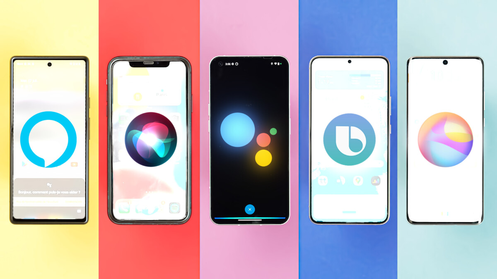AI is particularly present in voice assistants, just like Google, Siri, Bixby, Alexa or Celia, these AIs allow us to help us in our daily lives, such as turning off the lights at 8 p.m. if we have a connected house, or ask him for the weather by simply calling him by his name by saying "hey google" or "dit siri" for the best known, Google and Siri.
Additional Information
French video from Frandroid on voice assistants :
French video from Frandroid on voice assistants :
3. AI in healthcare :

In Great Britain researchers have studied the ability of AI in predicting a heart attack in a patient. That
is
to say, she is able to accumulate and consolidate a large amount of medical information. So she's much more
efficient than humans at making diagnoses.
The benefits: Doctors will be able to focus on their at-risk patients, while others will avoid unnecessary
treatment.
This AI system was named Watson and developed by an IBM. Thanks to Watson because he not only confirmed treatments prescribed by
oncologists, but he also found 30% more treatment options that doctors had not identified.
There are also the Xenobots : they are living robots born from the combination of AI and
biology. Made from a skin and heart stem cell of one of the xenopus genus. For the moment, we have found them
useful to program them to treat diseased organs.
4. AI in art :
"Midjourney" is currently the most powerful ai in the artistic universe, this ai found on discord allows to transform words (called "prompts") into works of art, we can ask it for any artistic style and no any resolution. Recently released v5 can make such realistic works that we can't tell the difference with a photo.
Here is attached one of my creations with Midjourney:
5. AI in video
"Make a video" is an ai developed by google and meta allowing to make videos by following the same process as Midjourney (prompts). Just ask him: "A teddy bear making a portrait" to generate an excerpt from the video above. But make-a-video was suspended because we could create too many deep-fakes (fake videos) which I will explain in The dangers of AI.
6. AI in music :
"Magenta" is a software developed by google allowing to make music of all genres. This ai can also be used as an aid in the creation of a piece of music.
7. Chatgpt
ChatGPT (Chat Generative Pretrained Transformerest) is a prototype conversational agent using artificial
intelligence, developed by OpenAI and specialized in dialogue.
ChatGPT is able to generate answers to
questions, to complete sentences, translate texts, code in any programming language, write articles and hold
conversations with humans.
To visualize the power of this ia chat GPT-3 has 175 billion parameters and
chat
GPT-4 has 100 trillion (ie 100,000 billion) parameters, which corresponds to the number of parameters of a
human
brain.
This AI has the capabilities to claim to be the most powerful artificial intelligence to date !
8. Microsoft bing
Although ChatGPT is a powerful AI model, bing recently released its AI in collaboration with the openAI company. Its name : "the new bing", nothing impressive for the moment, but it has as many advantages as disadvantages than chatGPT and competes with the google chrome browser !
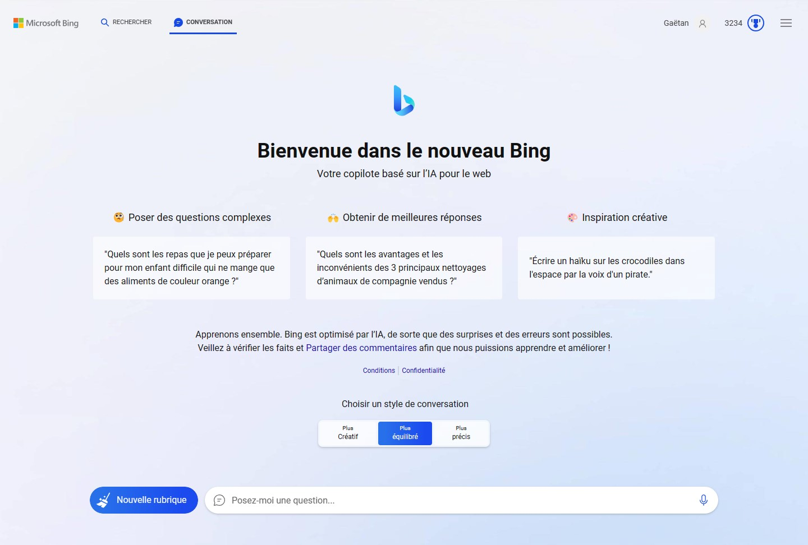
Advantages over chatGPT:
Disadvantages compared to chatGPT :
As you have understood, bing will be more dedicated to research than chatGPT, some Internet users call it "the free chatGPT 4" because as it is connected to the web it will never miss news when you had to pay for it access the latest information with chatGPT 4. To conclude, these 2 models of artificial intelligence are very different and it will be necessary to choose according to the necessary need, bing for research and chatGPT for a more elaborate answer.
9. Google innovations 2023-2024
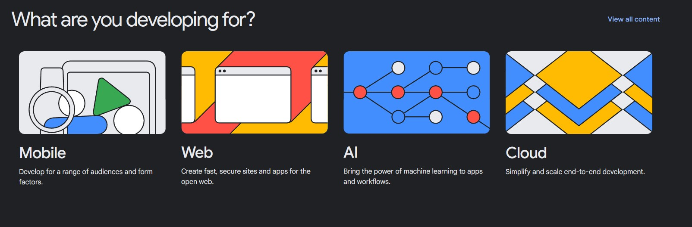The Google I/O, this annual event where Google unveils its latest magic tricks. This year, the May 10 conference was no exception to the rule, with artificial intelligence in the spotlight. Here are the details of the 11 most impressive demos of this 2023 edition.
1. The fastest photoshop ever thanks to the all new google photos ai :


Google Photos' new editing tool, Magic Editor, lets you do major editing like enhancing the sky, erasing people in the background, and even moving an object by recreating a part that was cut out by framing the photo as we can see in photo number 2, where the child's bench and balloons have been recreated!
2. The detector of images created in generative AI :
Faced with the proliferation of images modified by AI or generated by tools like Midjourney or Stable
Diffusion, Google offers a solution: the « About this image » function.
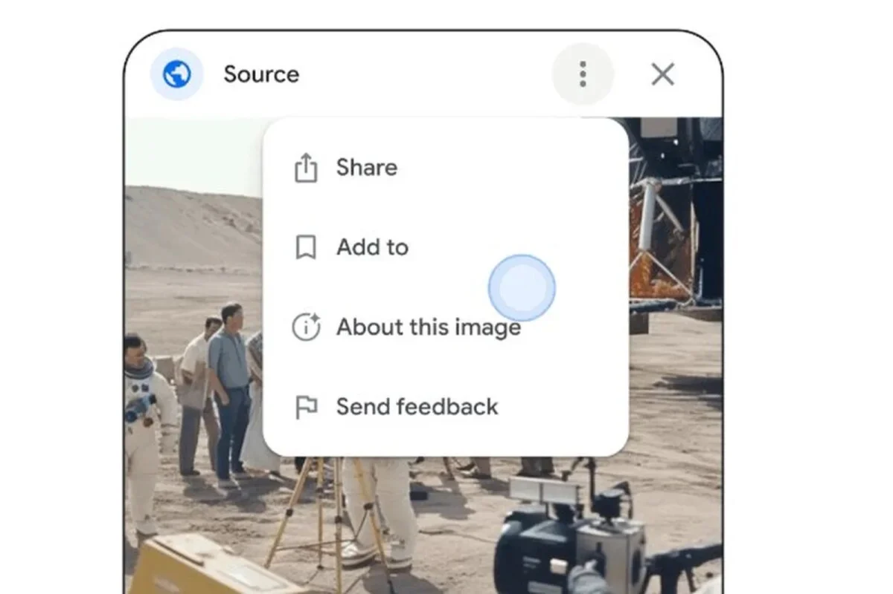
Thus, Google will be
able
to identify the origin of the images, as it does with fake news. It is able to trace the origin of a photo,
not
just by looking for clues in the photo, but in the original image in its database.
3. Google Maps and its « immersive view for routes » :
Get ready to see your route planning from a whole new perspective. The new feature of Google Maps compiles
all
the necessary information (traffic, cycle paths, intersections, parking, etc.) in one place.
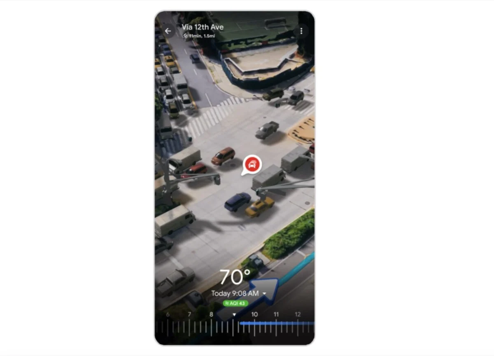
Using computer vision and
AI,
Immersive View merges billions of Street View and aerial images to create a digital model of the world. It's
like a dress rehearsal before D-Day.
4. MusicLM, the AI tool that turns text into music :
Tired of ready-made playlists? While google had created the dedicated magenta ai for music, google released an even more powerful ai for music, its name : "MusicLM".
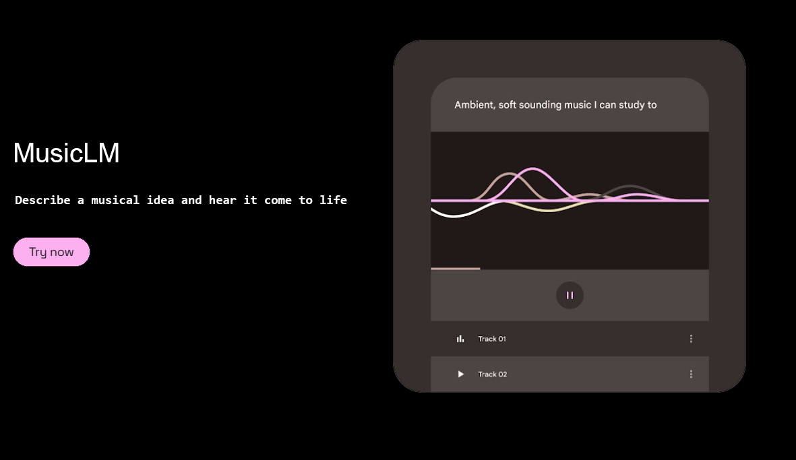
Simply type in "soulful jazz for a dinner party" and have the tool create several versions of the song for
you.
Here is an excerpt of music produced by musicLM :
This music generator is entering a public test phase, you can register on the waiting
list.
5. Universal Translator, dubbing
Presented at the Google I/O conference, the Universal Translator aims to transpose videos from one language to another, while preserving the original intonation and atmosphere. It is actually a lip-synced translator.
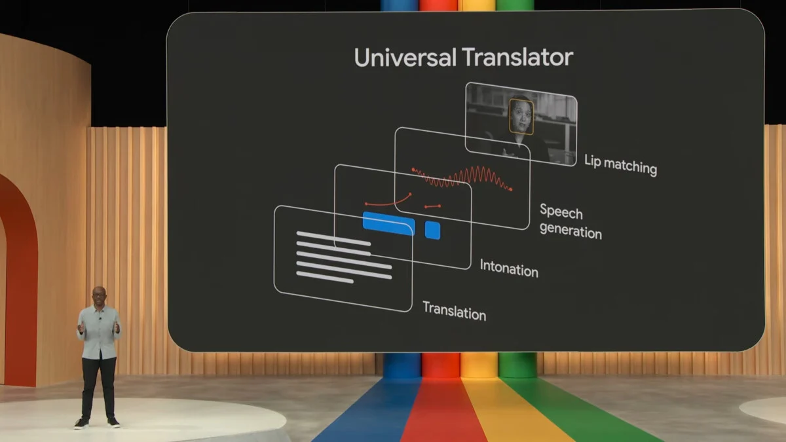
This means that this tool is not limited to converting audio from one language to another, it also reproduces the speaker's voice, intonation and facial expressions. You understood correctly: the translated video adjusts the speaker's labial movements to match the expressions specific to the target language.
6. Sidekick, the personal assistant for Google Docs :
Google's new Sidekick panel, introduced at this conference, integrates into a side panel of Google Docs. It continuously reads and processes your entire document as you write, offering contextual suggestions that refer specifically to what you've written.
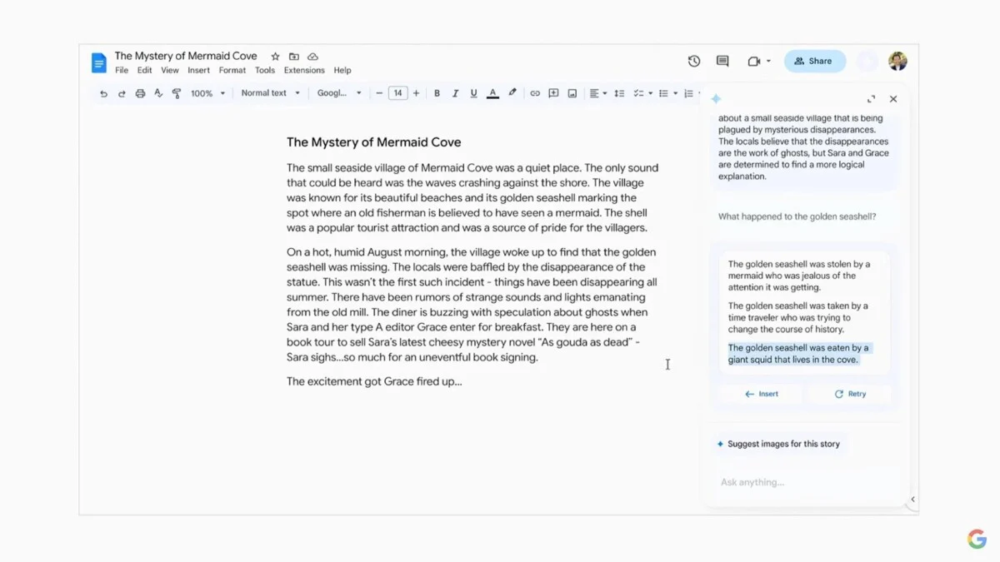
For example, if you're writing a children's story, Sidekick can suggest what might happen next in the story. The tool can also generate images based on the content of the document, helping to illustrate the story as it is written. Google has also demonstrated the ability to summarize written conversations, offer speaker notes, and more. All of these features are part of Google's newly rebranded Duet AI suite. It's a comparable solution to what Microsoft showed off with its AI-powered Copilot features.
7. Tailwind, the AI-powered notebook tool :
If you've always dreamed of a personal assistant that automatically organizes and summarizes your notes, the Project Tailwind is made for you
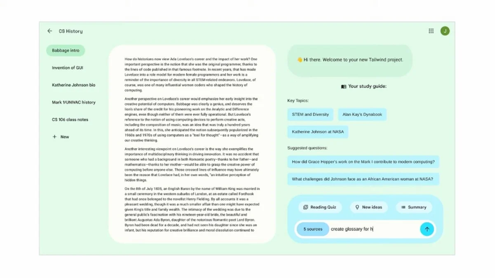
Select files from Google Drive and the tool creates an AI model, as well as a custom interface for browsing notes and documents.
8. Project Starline, the 3D teleconference :
No more Zoom meetings where it is difficult to distinguish the faces of his colleagues. With the latest Project Starline prototype, Google offers a 3D teleconferencing video booth.
Notable improvements include less hardware, such as fewer cameras and more reliance on AI and machine learning to generate three-dimensional images.
9. Google can write your texts using AI :
The Magic Compose feature allows you to rewrite texts in different styles, more positive, more professional or even in the manner of Shakespeare for nostalgic literary people.
This functionality will be integrated into Google Messages. You will start by writing your message in the usual way. Then you will choose the tone you want to give to the message and Magic Compose will adapt the text accordingly.
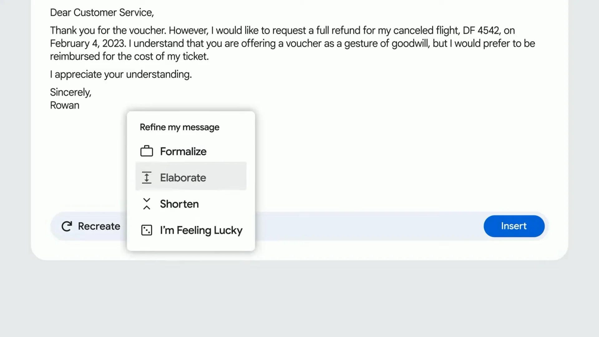
Regarding Gmail, Google has unveiled a frankly impressive feature. Called Help Me Write, it's as simple as the name suggests: by clicking a button at the bottom of the email window, you can ask Gmail to formulate a response for you.
10. Presentation of paLM 2 :
paLM 2 is an artificial intelligence operating under google bard (which will be explored in depth on the next topic) dedicated to programming. This ai excels in all programming languages such as python, java, c++, javascript, and much more... paLM also has the ability to transform python code into c++ code, and this is not everything besides being able this AI can also solve any math problem !
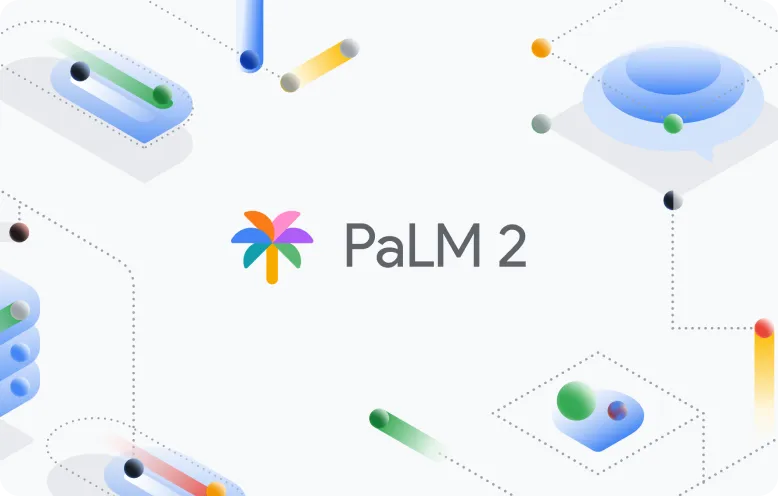
paLM 2 has several models that provide excellent core capabilities in a wide range of sizes. Google named them: "Gecko" - "Otter" - "Bison" - "Unicorn".
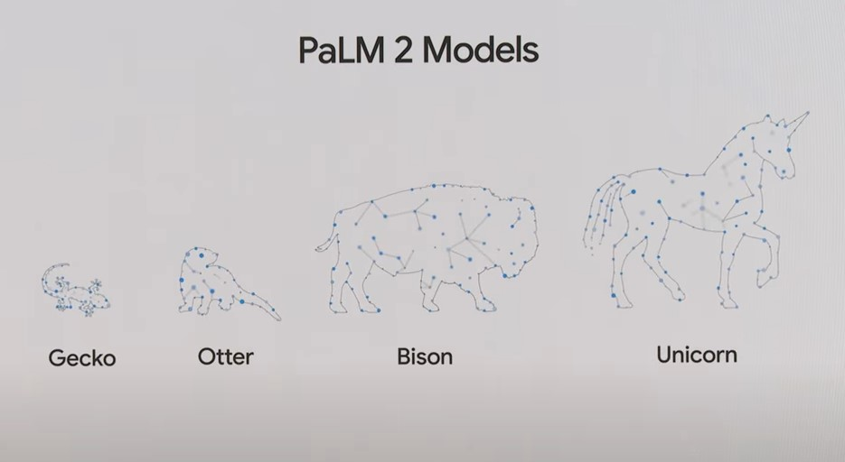
Gecko is so light it can run on any mobile device and is fast enough for large interactive apps on a terminal, even offline. paLM 2 models are more powerful in logic and reasoning thanks to extensive training in scientific, mathematical fields and also in more than 100 languages to be able to help developers around the world !
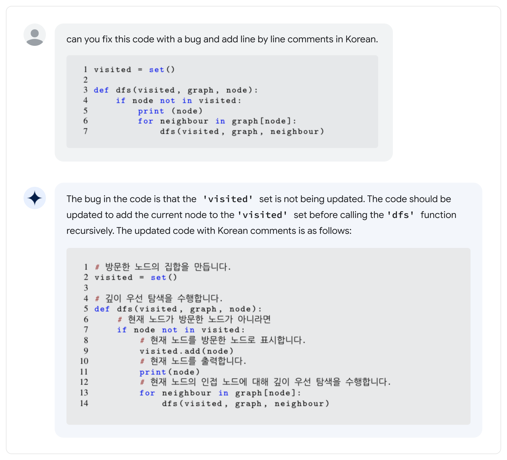
11. Presentation of a. sec-paLM and b. med-paLM 2 :
a. Sec-paLM: In addition to paLM 2, google has developed sec-paLM, a dedicated AI for security. Sec-paLM is actually a version of paLM 2 fine-tuned for security-related use cases. It therefore uses AI to better detect malicious scripts and can help security experts understand and resolve threats.
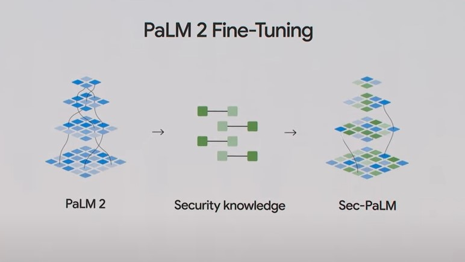
b. med-paLM 2: So there is also med-paLM 2, an AI this time dedicated to the field of medical knowledge. med-paLM 2 makes it possible to divide by 9 the inexact reasonings compared to the model, it approaches thus the performances of the clinical experts who answered the same questions !
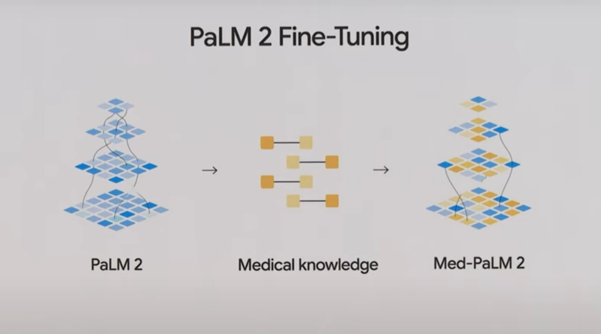
In fact, med-paLM 2 was the first language model to achieve "expert level" on medial aptitude exam questions and to be state-of-the-art. Google is still working today on adding features to med-paLM 2 so that it can synthesize information from medical imaging. Imagine an AI collaborator who helps radiologists, interprets images and communicates results.
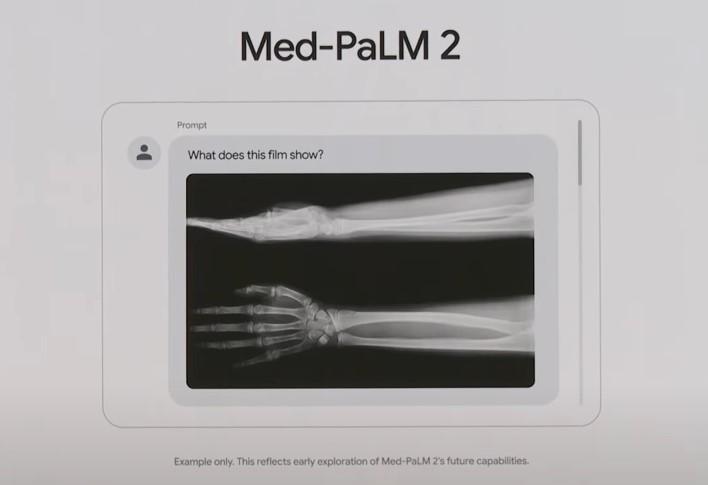
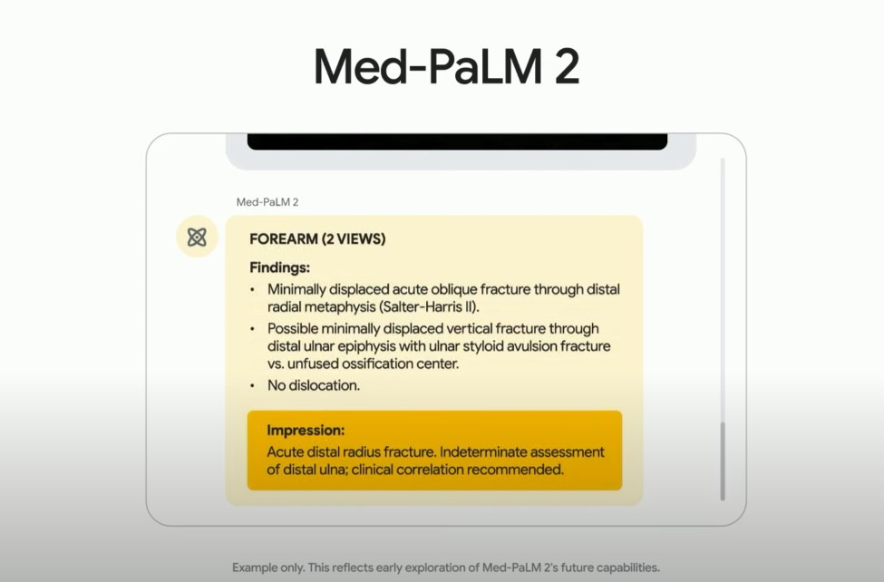
Google labs
In short, the google innovations presented here belong to the technologies of the google labs block. To be honest, google labs offers the main prototypes of AI and offers the possibility of joining the "waiting list" to be informed when the experiments are made available in our country.
Additional Information
Google I/O conference on all innovations :
Summary in 10 min on the google I/O event :
10. Google bard
After chatGPT and Bing it's Google Bard which is launching into artificial intelligence to get ahead of OpenAI and Microsoft, which had released their AI model long before Google. But then what does this artificial intelligence have more than the other two ai.
▶ An AI that can read and understand images:
Indeed Bard is at the forefront of technology, he can read any images while the others
models still had a lot of imprecision.
▶ An AI like Bing, available everywhere:
Just like Bing, google Bard is available to any google search to be able to give
Additional Information. Bard may also be available on google docs, slides, sheets, gmail and in
the field of programming as seen previously in google innovations.
▶ An AI that can display images:
Both ChatGPT and Bing lacked one last thing, google figured out where the problem was: the
chatbot Bard sees the arrival of a new way of displaying information, closer to research than we
knows. Now, in his answers, Bard can integrate images from Google Images to clarify the
information and make users more eager to use the artificial intelligence model of
google.
▶ An AI that can generate images:
OpenAi had the possibility to generate images thanks to Dall-E, the same for Bing, but for Bard it is a
brand new generative image AI: Adobe Firefly, from the professional company "Adobe", but what more
apart from prestige compared to others? Well instead of changing from one application to another, the
image generation will be directly integrated into the Bard chatbot.
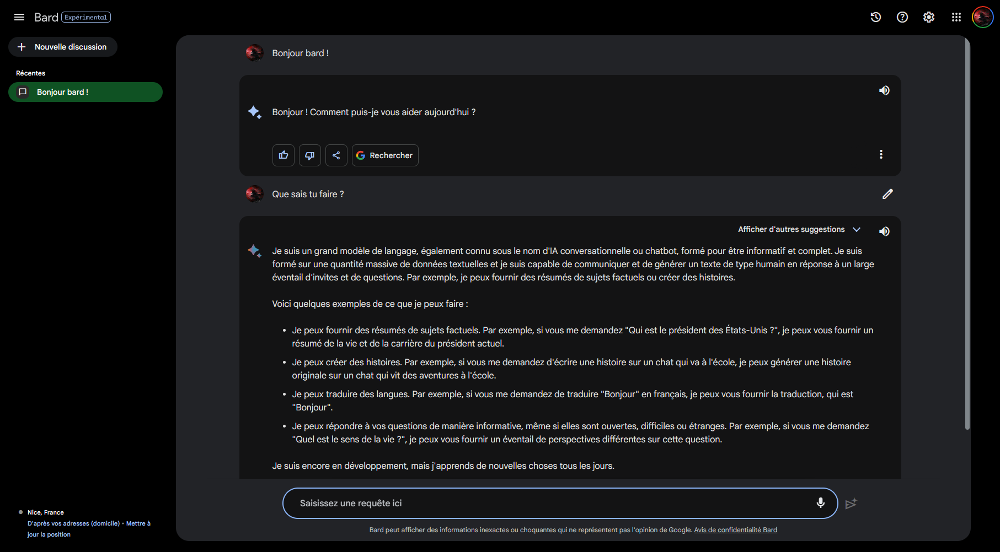
In short, Google Bard is surely the most advanced AI model. Moreover it is now available today 7/13/23 after a long wait from all over the world, we can test it right away at the address bard.google.com. Despite this output, there are still some features that are not available in France such as exposing an image with a prompt to make it generate a response based on the illustration it was given. Nevertheless he is still possible to have access to it by modifying the parameters of the google account to put it in English because these functions will only be available in English.
Additional Information
Watch the French video of Frandroid on google Bard :
See the presentation of Google Bard in co-pilot version :
See the latest news and updates from Bard
11. Paragraphica :
Paragraphica is an artistic project without camera or lens. This machine uses the design of the appendages
that
allow star moles to sense their environment. Paragraphica sees nothing, the object "imagines" the exterior
from
a prompt.
Here is a 3D model of the paragraphica creator's site that you can manipulate :
And here is a video extract on the presentation of paragraphica :
This project therefore aims to collect different data, such as location, time, weather, etc... then using
different AI, it will be able to generate a high quality photograph roughly resembling the place. It is also
possible to choose the angle of view, close locations, framing and much more. In addition, when this machine
analyzes the data it offers a prompt like a text with gaps that can be modified to give an atmosphere, a
weather
forecast, or even to produce a completely modified image of what we see. This machine therefore creates an
alternate world that will partly correspond to reality but without any trace of it. A fake world that
Paragraphica imagines for you to create fake memories.
Here are some examples of accomplishments :
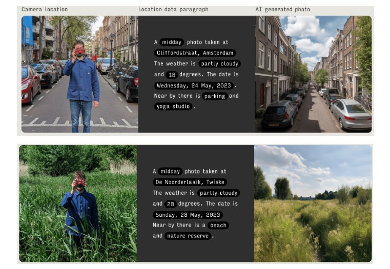
Benefits :
Disadvantages:
Paragraphica is therefore a complex device that can be used for many purposes such as images for video games or films, so for the moment it remains an object dedicated to fictitious appearance.
Additional Information
Link to the presentation of paragraphica with the explanations of its creator :
Link to the site of the creations of the designer of paragraphica :
12. How AIs are programmed ?
AIs are notably programmed in Python, C++, Java which are widely used programming languages.
13. Can AI think or learn:
AI involves 3 types of learning:
Supervised learning is a computer program that confronts AI with a set of data which have already been used by his training. Thanks to this, the AI will be able to rely on its knowledge to the color of the apple it will be green or red and for that of the orange it will be orange.
Unsupervised learning is confronting the AI with objects that are not in its database. So the AI will have to learn on its own, for example how many species are there? She never learned but she knows that there are different colors like the hen and the rabbit, so she can conclude that there are 2 different species by their color.
Reinforcement learning : AlphaGO, Google's AI uses this learning technique. This one implied tell the program what you want it to do, and then let it do its thing. To the extent that as he progresses towards the desired goal, he is better rated and his positive actions are thus reinforced. Eg in chess, the AI learns its moves that cause it to lose and will not use them in the future, but on the other hand the winning moves she retains and uses in the future.
14. Google Teachable Machine
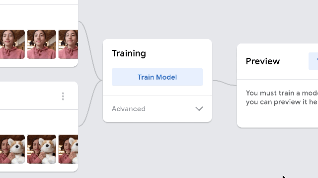We have previously seen the three main types of AI learning: supervised learning, unsupervised, and by reinforcement. These three learning models are part of the "machine" group. learning", but what about "deep learning" (also called deep learning), another important learning prototype that I have not mentioned so far?
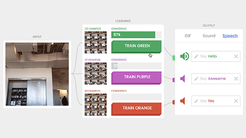
An AI available to all is capable of representing this type of learning: Google Teachable Machine. Indeed, this AI model uses deep learning to create classification models based on neural networks. It is a more advanced form of machine learning and more suited to certain tasks. This AI is therefore capable of naming things from several elements that we provide to it (images, videos, sounds), we can also connect it to smart devices such as televisions or lamps. Imagine that after having trained it, you could turn on the light in the living room with a snap of your fingers! But she is capable of much more than that, after several sound recognition training, we gave birth to an AI of the same model as that of teachable machine capable of recognizing the noise that does every key on the keyboard. With an error rate of only 5% this AI could in the future guess your Passwords....
15. Will artificial intelligence ever replace us ?

This is not science fiction. A robot woman has just been appointed head of a big company
Chinese. One of the Chinese video game leaders, NetDragon Websoft.
So this character is Tang Yu, a female robot who started out as the company's rotating
CEO.
Advantage: she can work 24 hours a day without being paid !

And then there was a table created by the ai midjourney which has been controversial lately by winning a
contest
of art in the "digital art" category in the United States.
A netizen wrote:
"The death of the profession of artist is unfolding right now before our eyes. If the
creative professions are not machine-proof, so even high-skill professions are at risk of
become obsolete. What will we be left with then?"
16. The dangers of AI :
AI has been able to make great advances in many fields such as medicine, art, etc...
But
in the wrong hands it can be used for criminal purposes or disinformation,
threats are
serious:
17. Closing
To conclude, AI is a fascinating subject. It is both fascinating and frightening. AI will be ubiquitous in the years to come and that is why we will have to be used to living with artificial intelligence.